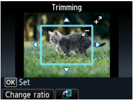

You can edit images displayed on the LCD by cropping them.
 Note
Note-
Crop images after specifying the page size, media type, and bordered or borderless printing in the print settings confirmation screen. If you change the paper settings after cropping, the cropped area may be adjusted to match the paper, or be disabled completely.
-
Select the photo to crop.
-
Display the cropping edit screen.
-
Press the center Function button to display the Change view/mode screen.
-
Use the

 button to select Trimming mode, then press the OK button.
button to select Trimming mode, then press the OK button.The Trimming screen is displayed.

-
-
Choose the area to print.
Use the following buttons to crop the area.
- , ,
 , and
, and  buttons:
buttons: -
Positions the cropping frame.
- + or - button:
-
Sets the cropping frame size.
- Left Function button:
-
Changes the aspect ratio of the cropping frame.
- Center Function button:
-
Rotates the cropping frame. To switch the cropping frame between portrait and landscape orientations, press this button.
-
Press the OK button to finalize your selection of cropping area.
The area to be cropped is specified, and the original photo is displayed.
Note-
The cropped image cannot be newly saved on the memory card/USB flash drive.
-
The cropped area is displayed only for photos which have been cropped.
-
To change the cropped area once it has been set, display the Trimming screen again.
-
To cancel cropping after cropping has been set, display the Trimming screen again and press the right Function button.